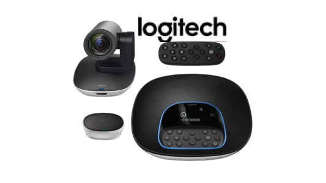
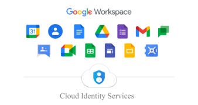
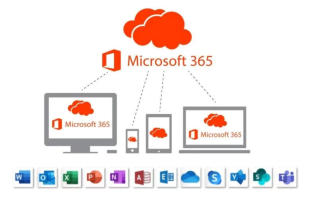

Here to Help you With your Tech ...

Our IT solutions help organisations achieve efficiency through secure platforms and strategic technology decisions.
We strive to provide the best level of service, support and care that is possible in the IT industry.ICT INFRASTRUCTURE SOLUTIONS LIMITED service agreements are no lock in - a reflection of the fact that we know you will love our level of service and price point.
We specialise in Cloud platforms Microsoft 365, Google, AWS, Zoho. Backup & Disaster Recovery, Microsoft Exchange Online, Microsoft Azure, Dedicated Private Cloud services, hardware and software supplies and installations, Server Monitoring, CCTV Surveillance, Conference System, Access Control, Data Centre, Network LAN/WAN cabling, Optical Fiber and IT Consulting.
- 

- 
- 